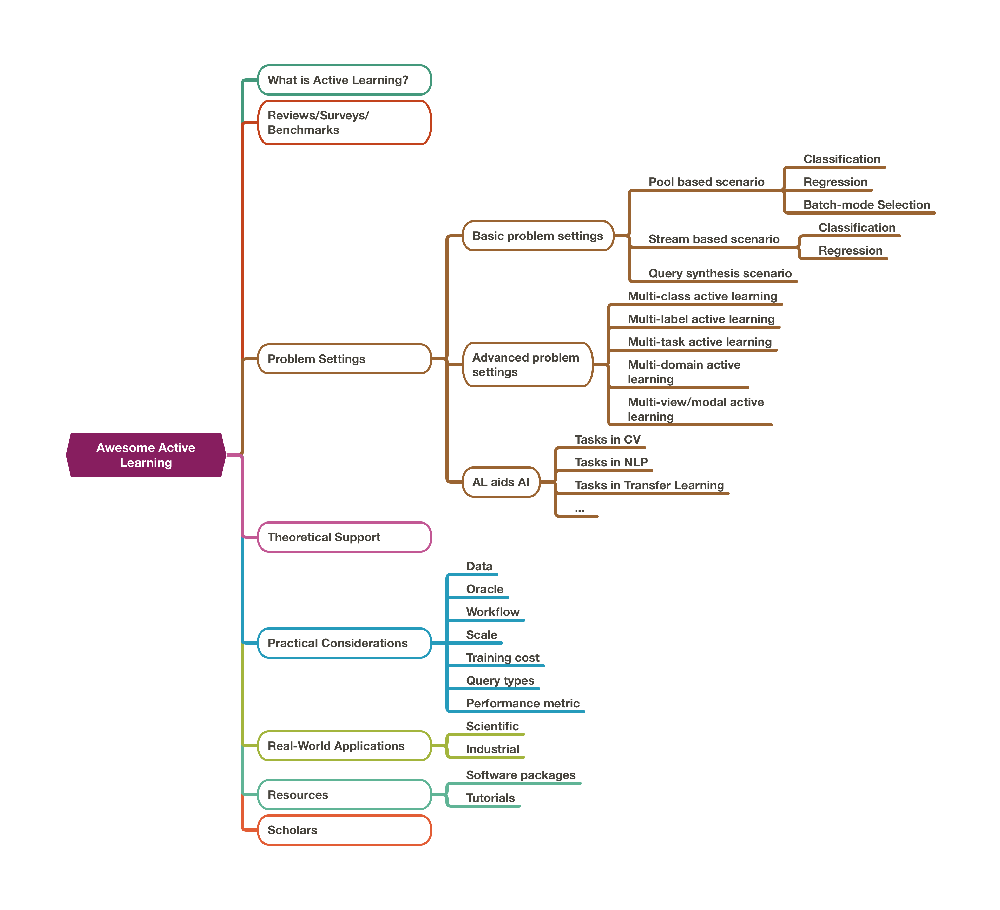

Awesome Active Learning
This is the introduction for the Awesome-Active-Learning project. Hope you can find everything you need about active learning (AL) in this repository.
这篇博文同样有一份中文版本: 主动学习，看这一篇就够了。
This is not only a curated list, but also a well-structured library for active learning. The whole repository is constructed in a problem-orientated approach, which is easy for users to locate and track the problem. At the mean time, the techniques are discussed under the corresponding problem settings.
Specifically, this repository includes:
- 1. What is Active Learning?
- 2. Reviews/Surveys/Benchmarks
- 3. Problem Settings
- 4. Theoretical Support for Active Learning
- 5. Practical Considerations to Apply AL
- 6. Real-World Applications of AL
- 7. Resources
- 8. Groups/Scholars
The hierarchical structure of this repository is shown in the following figure, and you can find the paper-list in the corresponding sub-pages:

Shortcuts
These shortcuts could quickly lead you to the information you want.
| Link | Note |
|---|---|
| Taxonomy of Strategies | The types of AL strategies, in general pool-based scenario. |
| AL Aids AI | Use AL under other AI research problems. |
| AL Applications | The scientific and industrial applications of AL. |
| Practical Considerations | The practical issues in applying AL when the assumptions change. |
| Intrinsic Issues in AL | The intrinsic issues of AL. |
| Deep AL | AL with deep neural networks. |
Contributing
If you find any valuable researches, please feel free to pull request or contact ruihe.cs@gmail.com to update this repository. Comments and suggestions are also very welcome!
1. What is AL?
High labeling cost is common in machine learning community. Acquiring a heavy number of annotations hindering the application of machine learning methods. Active learning is one approach to relief this annotation burden. The intuition is that not all the instances are equally important to the desired task, so only labeling the more important instances might bring cost reduction.
It is very hard to find a formal definition of general AL within a single optimization function. It would be better to define specific AL under specific problem settings. Hence, we only point out the essences of AL in this section. When we talk about active learning, we talk about:
- an approach to reduce the annotation cost in machine learning.
- the ways to select the most important instances for the corresponding tasks.
- (in most cases) an interactive labeling manner between algorithms and oracles.
- a machine learning setting where human experts could be involved.
2. Reviews/Surveys/Benchmarks
There have been several reviews/surveys/benchmarks for this topic. They provided a good overview for the field.
Reviews/Surveys:
- Active learning: theory and applications [2001]
- Active Learning Literature Survey (Recommend to read)[2009]
- A survey on instance selection for active learning [2012]
- Active Learning: A Survey [2014]
- Active Learning Query Strategies for Classification, Regression, and Clustering: A Survey [2020][Journal of Computer Science and Technology]
- A Survey of Active Learning for Text Classification using Deep Neural Networks [2020]
- A Survey of Deep Active Learning [2020]
- Active Learning: Problem Settings and Recent Developments [2020]
- From Model-driven to Data-driven: A Survey on Active Deep Learning [2021]
- Understanding the Relationship between Interactions and Outcomes in Human-in-the-Loop Machine Learning [2021]: HIL, a wider framework.
- A Survey on Cost Types, Interaction Schemes, and Annotator Performance Models in Selection Algorithms for Active Learning in Classification [2021]
- A Comparative Survey of Deep Active Learning [2022]
Benchmarks:
- A Comparative Survey: Benchmarking for Pool-based Active Learning [2021][IJCAI]
- A Framework and Benchmark for Deep Batch Active Learning for Regression [2022]
3. Problem Settings
In this section, the specific problems which active learning is trying to solve are described. The previous works are organized in a problem-oriented order. The methods are categorized for the corresponding settings in the subpage.
Three levels of problem settings:
- Basic Problem Settings
- Under the basic scenarios: Pool-based/Stream-based/Query synthesis
- Under the basic tasks: Classification/Regression
- Advanced Problem Settings
- Under many variants of machine learning problem settings
- Tasks from other Research Fields
- With more complex tasks from other research fields
3.1. Basic Problem Settings (Three basic scenarios)
There are three basic types of scenarios, almost all the AL works are build on these scenarios. The scenarios are different in where the queried instances are from:
- pool-based: select from a pre-collected data pool
- stream-based: select from a steam of incoming data
- query synthesis: generate query instead of selecting data
For the most basic AL researches, they usually study on two basic tasks:
- classification
- regression
The details and the list of works could see here.
3.2. Advanced Problem Settings
There are many variants of machine learning problem settings with more complex assumptions. Under these problem settings, AL could be further applied.
- Multi-class active learning: In a classification task, each instance has one label from multiple classes (more than 2).
- Multi-label active learning: In a classification task, each instance has multiple labels.
- Multi-task active learning: The model or set of models handles multiple different tasks simultaneously. For instance, handle two classification tasks at the same time, or one classification and one regression.
- Multi-domain active learning: Similar to multi-task, but the data are from different datasets(domains). The model or set of models handles multiple datasets simultaneously.
- Multi-view/modal active learning: The instances might have different views (different sets of features). The model or set of models handles different views simultaneously.
- Multi-instance active learning: The instances are organized into bags and training labels are assigned at the bag level.
3.3. Tasks in other AI Research Fields
In many AI research fields, the tasks can’t be simply marked as classification or regression. They either acquire different types of outputs or assume a unusual learning process. So AL algorithms should be revised/developed for these problem settings. Here we summarized the works which use AL to reduce the cost of annotation in many other AI research fields.
- Computer Vision (CV)
- Natural Language Processing (NLP)
- Transfer learning/Domain adaptation
- Metric learning/Pairwise comparison/Similarity learning
- One/Few/Zero-shot learning
- Graph Processing
- etc. (The full list of fields could see here)
4. Theoretical Support for Active Learning
There have been many theoretical supports for AL. Most of them are focus on finding a performance guarantee or the weakness of AL selection. (This section has not finished yet.)
5. Practical Considerations to Apply AL
Many researches of AL are built on very idealized experimental setting. When AL is used to real life scenarios, the practical situations usually do not perfectly match the assumptions in the experiments. These changes of assumptions lead issues which hinders the application of AL. In this section, the practical considerations are reviewed under different assumptions. The details and the list of works could see here.
| Assumption Type | Practical Considerations |
|---|---|
| Data | Imbalanced data |
| Cost-sensitive case | |
| Logged data | |
| Feature missing data | |
| Multiple Correct Outputs | |
| Unknown input classes | |
| Different data types | |
| Data with Perturbation | |
| Oracle | The assumption change on single oracle (Noise/Special behaviors) |
| Multiple/Diverse labeler (ability/price) | |
| Workflow | Cold start |
| Stop criteria | |
| Scale | Large-scale |
| Training cost | Take into account the training cost |
| Incrementally Train | |
| Query types | Provide other feedbacks other than just labels |
| Performance metric | Other than the learning curves |
6. Real-World Applications of AL
We have introduced that AL could be used in many other AI research fields. In addition, AL has already been used in many real-world applications. For some reasons, the implementations in many companies are confidential. But we can still find many applications from several published papers and websites.
Basically, there are two types of applications: scientific applications & industrial applications. We summarized a list of works here.
7. Resources
7.1. Software Packages/Libraries
| Name | Languages | Author | Notes |
|---|---|---|---|
| AL playground | Python(scikit-learn, keras) | Abandoned | |
| modAL | Python(scikit-learn) | Tivadar Danka | Keep updating |
| libact | Python(scikit-learn) | NTU(Hsuan-Tien Lin group) | |
| ALiPy | Python(scikit-learn) | NUAA(Shengjun Huang) | Include MLAL |
| pytorch_active_learning | Python(pytorch) | Robert Monarch | Keep updating & include active transfer learning |
| DeepAL | Python(scikit-learn, pytorch) | Kuan-Hao Huang | Keep updating & deep neural networks |
| BaaL | Python(scikit-learn, pytorch) | ElementAI | Keep updating & bayesian active learning |
| lrtc | Python(scikit-learn, tensorflow) | IBM | Text classification |
| Small-text | Python(scikit-learn, pytorch) | Christopher Schröder | Text classification |
| DeepCore | Python(scikit-learn, pytorch) | Guo et al. | In the coreset selection formulation |
| PyRelationAL: A Library for Active Learning Research and Development | Python(scikit-learn, pytorch) | Scherer et al. | |
| DeepAL+ | Python(scikit-learn, pytorch) | Zhan | An extension for DeepAL |
7.2. Tutorials
| Title | Year | Lecturer | Occasion | Notes |
|---|---|---|---|---|
| Active learning and transfer learning at scale with R and Python | 2018 | - | KDD | |
| Active Learning from Theory to Practice | 2019 | Robert Nowak & Steve Hanneke | ICML | |
| Overview of Active Learning for Deep Learning | 2021 | Jacob Gildenblat | Personal Blog |
8. Groups/Scholars
We also list several scholars who are currently heavily contributing to this research direction.
- Hsuan-Tien Lin
- Shengjun Huang (NUAA)
- Dongrui Wu (Active Learning for Regression)
- Raymond Mooney
- Yuchen Guo
- Steve Hanneke
Several young researchers who provides valuable insights for AL:
- Jamshid Sourati [University of Chicago]: Deep neural networks.
- Stefano Teso [University of Trento]: Interactive learning & Human-in-the-loops.
- Xueyin Zhan [City University of Hong Kong]: Provide several invaluable comparative surveys.
Awesome Active Learning
https://blog.superui.cc/machine-learning/awesome-active-learning/